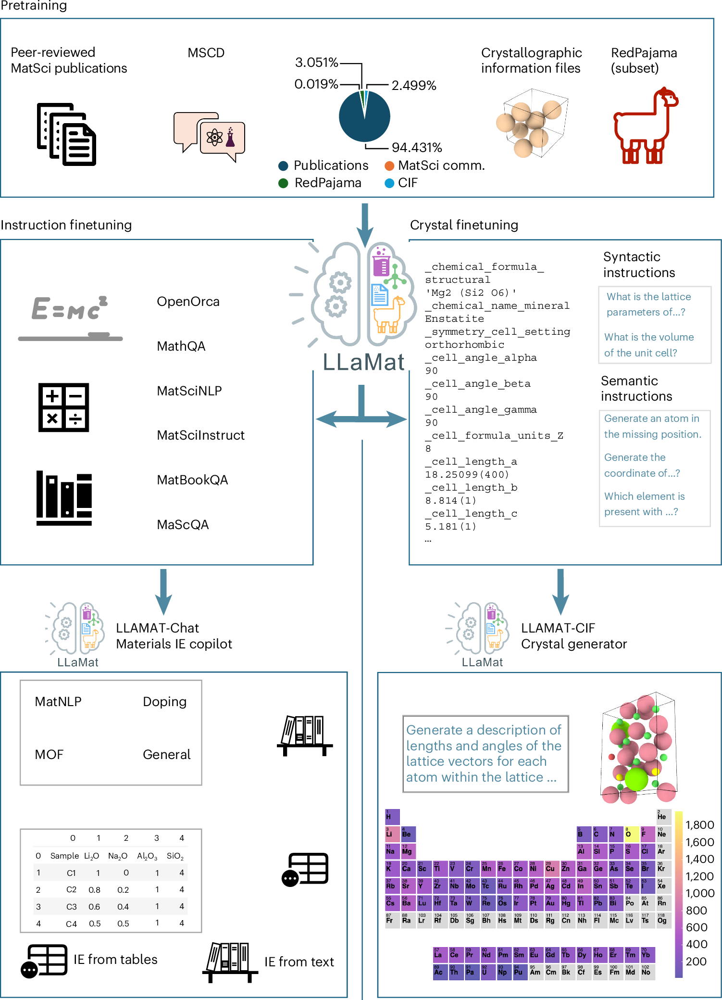
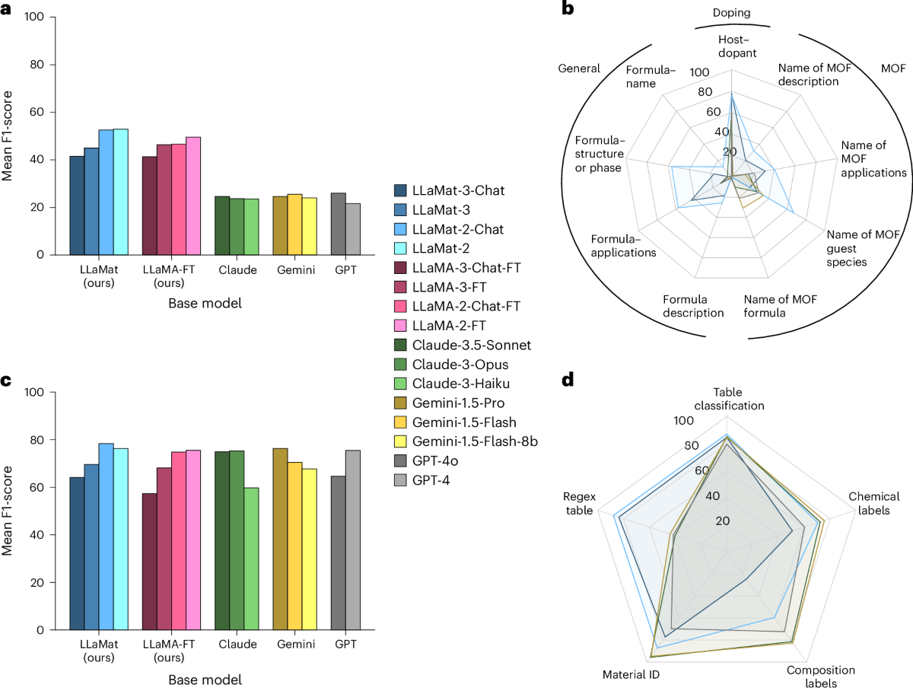

LLaMat——材料领域适配有效，但“适应僵化”还只是待验证的解释
论文笔记: LLaMat——材料领域适配有效，但“适应僵化”还只是待验证的解释
1. 背景信息与阅读结论
论文 ：A family of large language models for materials research with insights into model adaptability in continued pretraining。IIT Delhi 为主，联合 Cerebras、Lila Sciences / Intel Labs；发表于 Nature Machine Intelligence 8, 435–448，2026-02-27 。前四位作者为共同贡献作者。
阅读范围 ：正式版正文需要订阅，本次读完作者开放稿的主文与方法，并重点核对正式版公开补充材料中的数据、训练、结果、适应性分析和解释性实验。 这不是正式版正文的完整阅读 。下文以正式补充材料的数字为准，沿用旧稿方法时单独标明。
- 正式文章 ：书目信息、摘要、公开 Figures 1–3。
- S：正式补充材料 ：下文的 S§、Table F.1 等均指此文件。引用页码为材料上印刷的页码。
- P：arXiv v2 ：2025-01-28，题为 Foundational Large Language Models for Materials Research，作者排序也与正式版不同。
- 作者代码与模型入口 。
读完最值得留下四点：
- 领域 CPT、指令训练和任务训练的组合，能把小模型做成有效的材料信息抽取工具。 论文的主要贡献是训练与评测体系，没有提出新的网络结构或可塑性优化算法。
- 基准收益同时包含领域语义、标注习惯和输出格式的学习。 与直接调用商业模型的巨大分差，不能全部归功于新增材料知识。
- 更强底座不保证适配后更强，但也不能据此断言“预训练越多，模型越僵化”。 作者在 S§L 明确承认没有控制实验验证这个假说。
- 晶体生成需要拆开看：成分有效、结构有效、代理模型预测稳定是三件事。 论文有值得重视的结果，也有指标间的取舍。
2. 关键问题：模型懂一句材料描述，是否就能按科研数据规范正确抽取？
用正式补充材料中的真实例子：输入讨论非均质铝合金的拉伸与弹性性质，任务要求给指定词逐一标注实体类型。只看其中三个词：
| 词 | 数据集标注 / LLaMat-3-Chat 输出 | GPT-4o 输出 |
|---|---|---|
| heterogeneous | b-dsc，描述属性的起点 |
b-mat，材料实体起点 |
| aluminum | b-mat，材料实体起点 |
i-mat，材料实体内部 |
| alloys | b-dsc，描述属性的起点 |
i-mat，材料实体内部 |
来源：S§N，pp.58–59。b/i 表示实体开始/内部，mat/dsc 表示材料/描述。
GPT-4o 把三个词连成一个材料实体，从一般语言理解上并不荒谬；但不符合这份数据集的标注规则。若要把大量论文转成统一数据库，这类粒度错位会直接影响后续合并、关系抽取与统计。
这里同时有两个问题：懂不懂材料概念，熟不熟悉目标任务的表达约定。 这个例子不能独自证明 GPT-4o 缺乏材料知识，却很好地解释了为什么作者需要领域语料与有监督任务训练两个环节。也因此，后面评测必须追问：模型到底学到了多少知识，又学到了多少标签与格式？
3. 关键方法：先积累领域语料经验，再把它变成可调用的任务能力

来源：正式版 Fig.1。重点看共享领域预训练之后的两条分支：文本抽取助手与晶体生成器有各自的后续训练，并非一个最终 checkpoint 同时完成所有展示任务。
沿同一个例子走一遍
① 领域 CPT：让底座反复看到材料表达。 作者从 LLaMA-2-7B、LLaMA-3-8B 出发，对模型参数做继续训练，仍使用自回归交叉熵目标。论文、晶体文件及其描述被当作 token 序列处理；没有显式加入材料本体、图网络或物理约束损失。对上例，CPT 提供的是合金、表征、性质等表达的上下文经验，不能仅凭 next-token prediction 保证学会 b-dsc 这样的目标标签。（P§2.1、§4.2；S§C）
② 指令训练：学会按问题组织输出。 开放稿的 Chat 路径依次使用通用 OpenOrca、数学题、材料指令数据。通用指令数据的作用是建立问答与指令遵循；数学数据用于维持定量问题处理能力。S Table E.2 的验证实验显示两类底座对 OpenOrca 数据量的反应不同，作者为 LLaMat-2、-3 分别选择 448k、576k 条样本，不能直接套同一配方。（P§4.2.2；S§E.2）
③ 联合任务训练：把语义映射到目标标注。 将材料 NLP 和结构化抽取任务的训练样本混合。对上例，训练目标明确规定哪些词是材料、哪些是描述，以及逐行输出的格式。推理时输入任务定义、候选标签、句子和待标注词，模型直接生成标签；没有额外检索步骤。论文展示的正确输出来自整个训练链条，不能据一条成功样例确定是哪一阶段起了作用。（P§4.2.3；S§M–N）
这条路线与“只拿材料问答做 SFT”的区别，是先用更大规模的领域原文做 CPT，再训练接口和任务；与“直接问商业模型”的区别，还包括看过目标任务训练集。前者涉及知识适配，后者涉及监督条件，比较时要分别处理。
CIF 分支：把晶体文件变成可训练的文本任务
CIF（晶体学信息文件）编码晶格参数、对称性和原子位置。作者用文件读取、原子计数、体积计算等 语法任务 ，以及缺失元素预测、结构维度预测、条件生成等 语义任务 构造指令数据，再用 PEFT 适配结构生成。（P§2.3、§4.2.3；S§I、§J）
我的理解是，这一设计把“能续写文件”拆成“能读字段、联系结构信息、再生成”几个可监督目标。 但学过这些任务，不等于输出会自动满足物理约束。 物理合理性仍要靠生成后的检查与能量模型评估；本文没有证明每一种辅助任务各自带来了多少增益。
4. 数据与训练：复用前最需要核对的口径
正式摘要概括为约 400 万篇材料论文、约 30B token，以及 175k 材料问答。实际复现应查看分阶段清单，不能把摘要数字直接当最终训练集大小。
| 数据/阶段 | 核心设置 | 为什么影响判断 |
|---|---|---|
| CPT | 材料论文占主导，混入约 3% RedPajama；另有 CIF 与社区文本 | 通用文本用于缓解遗忘；不能把所有 token 都称为材料论文 |
| CIF 数据 | S Table E.1 列出 470,222 个训练样本；Table A.1 列出 6,941,865 个晶体指令训练样本 | 文件数量与派生问答数量相差很大，不能混写 |
| 文本评测 | S Table A.2：10 个材料 NLP 子任务、4 个英文子任务；结构化抽取含掺杂、一般材料、MOF；表格测试 737 张 | 不同任务规模差异大，部分关系抽取测试只有几十例 |
| CPT 优化 | S Table D.1：一轮训练；峰值学习率分别为 3e-4、7e-5，10% warmup、cosine decay |
代际模型不是完全相同优化设置的受控比较 |
| 训练开销 | S§D.3：LLaMat-2 CPT 用 8 张 A100 80GB 约 17 天；LLaMat-3 用 2 台 Cerebras CS2 约 3 天 | 两组硬件不同，不能把时间比当成架构效率比 |
数据说明存在需复现者澄清的地方。 S Table A.1 的 MatSciInstruct 训练量为 52,658，与摘要的材料问答总量不是同一层次；Table E.1 列出了分词器相关 token 数，部分列又有缺项。P 对 RedPajama 混合比例也有不同表述。这里保留总量级，不拼出一个看似精确的统一配方。[?] 若要复现，应以实际数据清单和配置核对每阶段的样本数、混合比例与训练步数。
5. 关键证据：有效的领域工具，与未完成的机制归因
5.1 领域训练组合有收益，但商业模型分差不是 CPT 的净贡献
先看同代底座接受任务微调后的对照，指标为十个材料子任务的 Mean Micro-F1 ，即各子任务 micro-F1 的平均，不能解释成所有 token 汇总后的一个 micro-F1。（S Table F.1，p.32）
| 模型家族 | 原始 base 模型 + FT | LLaMat-Chat 最终流程 | 差值（百分点，笔记者计算） |
|---|---|---|---|
| LLaMA-2 / LLaMat-2 | 91.662 | 93.326 | +1.664 |
| LLaMA-3 / LLaMat-3 | 90.106 | 93.027 | +2.921 |
这支持 CPT 与后续指令训练的整体方案有效 ，但两个端点并非只相差 CPT，不能把差值称为 CPT 的独立因果收益。
相比之下，S Table F.2 中 GPT-4o 的相同平均指标为 68.25，落后很多。这里的商业模型没有接受相同的目标任务参数微调，因此展示的是“专门训练的工具对比直接调用通用服务”的效果，并非监督条件完全相同的知识能力竞赛。
回到铝合金样例：熟悉 b/i 边界和数据集偏好的模型会获得实实在在的分数优势。要检验领域理解是否提高，至少还需要同监督量的对照，以及换一套标注规范或未见任务后的迁移测试。
“保留通用能力”的范围也应收窄。 S Table A.2 中英文任务本身有训练样本；Table F.1 中 LLaMat-3-Chat 的英文 Mean Micro-F1 为 86.52，原始 LLaMA-3-Chat-FT 为 88.52。结果说明这套流程下仍能完成这些英文任务，不能概括为“所有通用能力无损保留”，也没有隔离出未经重新训练的能力保持。
5.2 结构化抽取的平均优势，掩盖了明显的子任务差异

来源：正式版 Fig.3。看右下角 d：LLaMat-2 的优势突出在 regex-table 判断，composition-label 定位上商业模型反而更强。图中汇总标签与补充表的指标措辞不完全一致，下面逐项数字按 S Table F.2 的 Accuracy 口径记录。
| 表格子任务 Accuracy | LLaMat-2-Chat | LLaMat-3-Chat | GPT-4o | GPT-4 |
|---|---|---|---|---|
| 判断是否适合用正则提取（regex） | 0.878 | 0.836 | 0.414 | 0.466 |
| 定位含完整成分信息的行/列（composition） | 0.595 | 0.245 | 0.723 | 0.867 |
来源：S Table F.2、§G，pp.33–34。第二行衡量的是 成分所在行列的定位 ，并非所有化学成分数值都被准确抽出了。
这比“全面超过商业模型”更有用：领域适配特别帮助某些专门判别，但通用表格定位仍可能是短板。选部署模型应按工作流中最重要的子任务，而不是只看平均分。
还有一个评测风险：P§4.1.5 写明只评估可解析成 JSON 的输出；正式 S Table F.2 仍列出不同的 exact-match 分母，例如 LLaMat-3-Chat 为 405/602，LLaMat-2-Chat 为 547/728，GPT-4o 为 52/737。S Table L.3 也单列解析率。 不能把这些比值直接当作同一全量测试集上的成功率。 正式正文中的完整计分协议本次无法核对，复现时应同时报解析率、解析成功后的语义准确率、全量任务成功率。
5.3 “适应僵化”：有排序翻转，没有预训练量的因果结论
最值得看的证据在 S Table L.1。注意模型名称：这里比较的是 LLaMA-Chat → LLaMA-Chat-FT ，不是 LLaMat 的 CPT 前后。
| MatNLP 子任务 Micro-F1 | LLaMA-2-Chat → FT | LLaMA-3-Chat → FT | 能看到什么 |
|---|---|---|---|
| SC-CoMIcs 实体识别 | 16.39 → 90.82 | 38.26 → 79.58 | 新底座起点更高，适配后反而落后 |
| structured-re 关系分类 | 9.61 → 100.00 | 83.58 → 100.00 | 终点相同，较低起点自然有更大百分比涨幅 |
第一行是值得研究的现象；第二行说明 相对提升率并不是纯粹的可塑性指标 。若使用作者表中的相对变化：
较低分母与指标天花板会共同放大代际差异。要讨论学习能力，应同时比较最终分数、绝对增量与同预算学习曲线。
作者推测，大规模预训练形成了更强的先验，使后续更新更困难。不过， S§L（p.47）明确将此限定为观察，并说明未做控制实验验证 。两组模型还有参数规模、注意力结构、分词器、训练硬件和学习率等差异（S§C–D），无法把终点排序归因于原始预训练 token 数。
也不要把现象扩成“LLaMA-3 总是更难适配”：§5.1 的完整流程相对 base+FT 的增量，在第三代反而更大；S Table L.1 的部分单任务也是第三代更好。 初始能力、某条训练路径的收益、最终工具性能，是三个不同问题。
5.4 晶体生成：成分合法性很强，结构合法性并非最优
以下为无条件生成，来自 S Table J.1（p.39）。LLaMA-2-7B 是表中引用既有工作的生成基线，温度为 1.0。
| 模型 | 结构有效率 ↑ | 成分有效率 ↑ | M3GNet 预测稳定率 ↑ |
|---|---|---|---|
| CDVAE | 1.000 | 0.867 | 28.8% |
| LLaMA-2-7B 生成基线 | 0.918 | 0.879 | 35.1% |
| LLaMat-2-CIF | 0.878 | 0.995 | 49.49% |
| LLaMat-3-CIF | 0.674 | 0.693 | 42.95% |
结构有效性检查原子间距离，成分有效性由 SMACT 检查电荷中性等条件，稳定性则依赖 M3GNet 代理能量评估。（S§J.1）LLaMat-2-CIF 的后两项有优势，但结构有效率低于两个所列既有基线；补充正文中“结构有效性提升尤其明显”的表述，不能脱离对照对象照抄。
这组结果确实支持第二代在当前无条件生成流程中更好，却还不是普遍规律。 同表的条件生成中，LLaMat-3-CIF-C 结构有效率 0.811，高于第二代的 0.728 ，排序取决于任务与指标。
还需守住两条边界：代理模型预测稳定不等于 DFT 验证或实验可合成；密度、元素种类数的分布距离也不能直接证明结构新颖性。若要声称“发现新材料”，还需要结构去重、与训练集合的比对和更高精度验证。
6. Insights
6.1 值得复现的不是“老模型胜过新模型”，而是同预算下的学习曲线
排序翻转与终点趋同同时存在，说明只看百分比增幅会误判。 我的下一步实验 会选同一模型家族、同一架构的多个预训练 checkpoint，固定领域文本、监督标签与计算预算，并给各 checkpoint 同等的学习率搜索机会。分别画领域泛化、格式成功率和旧能力保持曲线。
如果预训练越充分的 checkpoint 在这些控制下仍持续学得更慢、最终更差，才更接近“预训练导致可塑性下降”的证据。跨 LLaMA 代际比较适合提出问题，不足以完成归因。
6.2 把“学会知识”和“按要求表达”分开，会改变训练预算分配
铝合金标注案例、JSON 解析率以及表格子任务的分化，都表明输出约定是一部分瓶颈。 如果主要错误是字段、标签边界或格式，先做少量任务监督和约束输出更值得测试；如果换一种表达仍不理解概念，再投资 CPT。
可以把同一内容做成三种等价测试：自然语言回答、固定标签、JSON schema，再增加未见过的 schema。若收益只出现在训练过的表示方式上，就不能把它解释为广泛的领域知识迁移。论文的训练路线可复用，但这一步诊断应先于直接复制 30B-token 配方。
6.3 归因热图提供解释线索，还没有定位“僵化”机制
正式补充材料增加了 Feature Ablation 和 Layer Integrated Gradients：围绕一个玻璃成分与用途的提示，比较输入词对候选输出的归因。作者观察到部分 LLaMat-3 归因更均匀，并讨论领域关联可能变得分散。（S§P，Figs. P.1–P.2）
我认为这最多提示 输入依赖方式改变 。单提示的输入归因没有测量参数更新困难、损失曲率或学习速率，也未排除分词差异、输出概率尺度及归因基线的影响。若沿机制可解释性方向推进，应先在一组受控概念上复现归因变化，再干预相关表示，检查能否恢复后续学习；不能直接用热图给“适应僵化”背书。
7. 连接与发现
- MOC-Continual-Learning — Topic：把持续学习关注点从“旧知识是否遗忘”扩展到“新知识是否学得进去”；需要同时测保持与适应。
- MOC-Catastrophic-Forgetting — Concept：本文的适应僵化假说对应可塑性受限，不能与训练后旧能力下降混用；两者可能同时出现，也可能相互独立。